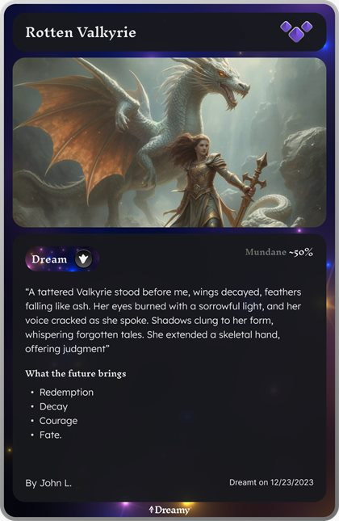
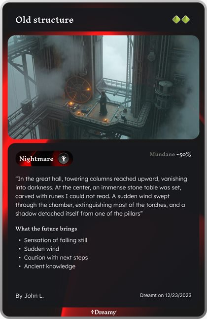
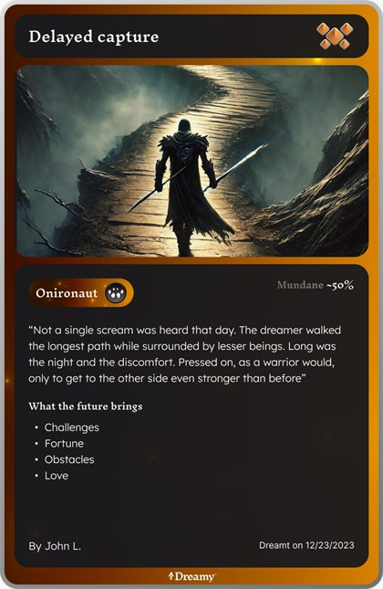
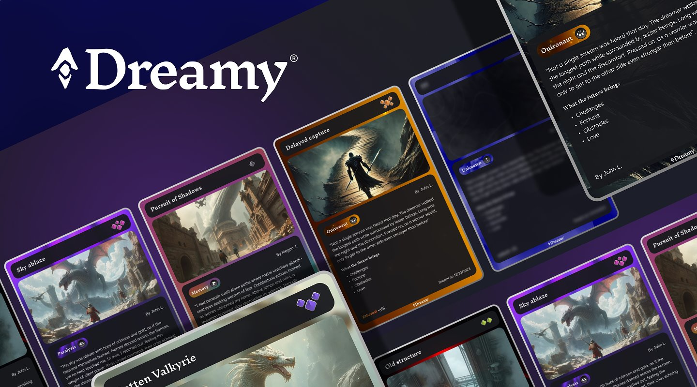
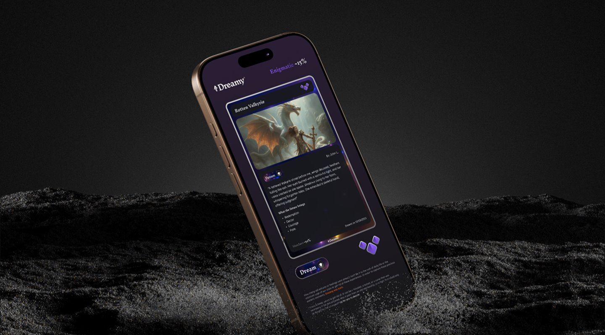

My micro SaaS current in development.
Dreamy was born from a desire. Dreams usually take up a lot of my sleep, but to no avail. I end up forgetting most of them. How many adventures or feelings were already lost? Be it to the rush of daily life or the unknown urge of our brain to get rid of these experiences. In order to capture these precious esoteric moments, Dreamy was born.
Role
CEO
Duration
25 - Now
Team
Just me




